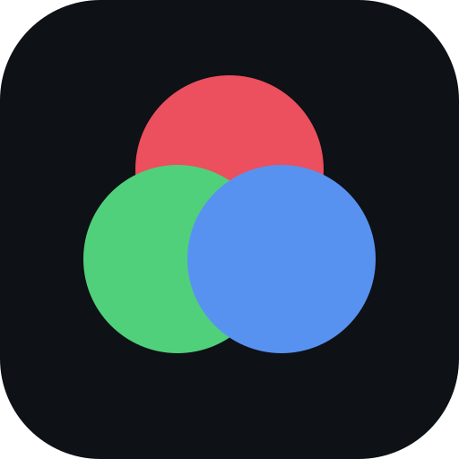

Distingue los colores con la camara, calibrada para tu vista.
Esta app es una ayuda de accesibilidad, no un diagnostico medico. Para una evaluacion real consulta a un profesional.
Mira la imagen. ¿Que numero ves dentro de los puntos?
Si una opcion de rojo-verde no mejora los colores, prueba la otra.
Sube la intensidad hasta que en la imagen de abajo veas el numero y los pares de colores se vean claramente distintos.